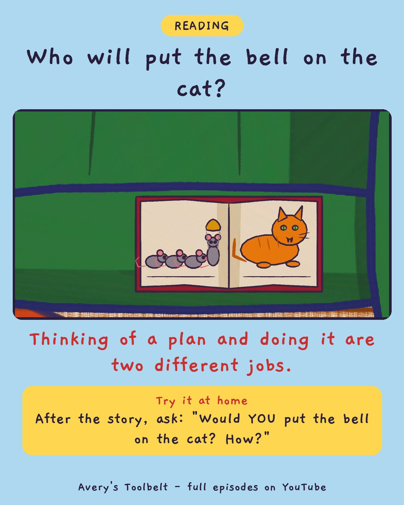

Belling the CatWho Will Bell the Cat?
幫貓掛鈴鐺

Who will put the bell on the cat?
Thinking of a plan and doing it are two different jobs.
Try it at home
After the story, ask: "Would YOU put the bell on the cat? How?"
Free printable coloring page (PDF) Watch the full episode on YouTubeAbout this episode, for grown-ups
Every morning the recycling is all over the kitchen floor, and nobody ever hears Spec the puppy do it. That night Mom reads the old fable about the mice who decide to hang a bell on the cat - until somebody asks who is going to do it, and nobody says anything. Avery is outraged. They had a plan! They're cowards!
So Avery makes a plan of her own: tie the little bell from the Christmas box to the recycling lid. But the Christmas box is in the garage, and the garage at night is completely dark. Gus volunteers for everything, instantly - including clearing the table.
What children find out: thinking of a plan and doing the plan are two different jobs, and the doing can be the scary part. And a story can be true about how people feel, even when mice don't really have meetings.
For grown-ups: an episode about being scared and embarrassed at the same time, and a mom who says she doesn't like the garage at night either. "It means you're the one who thought of the bell." Belling the Cat is a traditional fable, retold here.